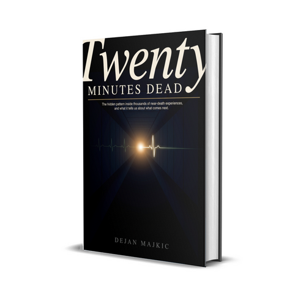

Twenty Minutes Dead Book
Product profile · Marketplace data 2026-10-09 · Sales-page research 2026-10-09 · Categories: Dating, Relationships & Romance, Family & Children, Spirituality & Esotericism

Marketplace record
| Product type | E-books |
|---|---|
| Price | $15.00 (Single payment) |
| Affiliate commission | 50% |
| Refund window | Per the vendor's sales page — check the official page before buying |
| Vendor | TopCourseCreator (listed since 2026-07-21) |
| Marketplace stats* | Cart conversion — · cancel rate — · affiliate earnings/sale $7.50 |
* Vendor-side marketplace statistics reported by Digistore24; they depend on traffic quality and are not a forecast.
Vendor's marketplace description
What it is: A nonfiction book examining thousands of documented near-death experiences across cultures and centuries. It centers on the true story of a man pronounced dead for twenty minutes who returned, describing details he had no way of knowing. Rather than pushing belief or debunking it, the book walks readers through the evidence honestly, gives skeptics a fair hearing, and lets the pattern …
From the vendor's sales page
Page title: Twenty Minutes Dead: The Pattern Inside Thousands of Near-Death Experiences
Meta description: For twenty minutes a man had no pulse. Then he read back messages written while he was clinically dead. The evidence-led book on what near-death experiences actually show. $15, instant PDF.
Headline
His heart stopped for twenty minutes. Two surgeons had already given up. Then he told them what he saw.
Section headlines
- You'll want this book if
- What's inside
- Read the first four chapters, free
- Why this book exists
- Read it without risk
- Twenty minutes dead. He still read the messages back, word for word.
- Frequently asked questions
Opening copy
A stack of phone messages. Written and posted on his monitor. While he had no pulse.
Instant PDF, the download link lands in your inbox in under a minute · 60-day money-back guarantee · 102 pages
Secure checkout via Digistore24. Price shown is $15, VAT (if it applies in your country) is added at checkout.
Prices mentioned on the page: $15, · $15
Guarantee language found: “60” — always confirm the current terms on the official page before relying on it.
CTA buttons: “Get the Book $15 + VAT” · “Get the book, $15 + VAT”
Research method: raw HTML fetch · 1049 words on page · quality: rich · researched 2026-10-09. Full research file (MD) ↗
Where to check it out
Read the vendor's full sales page (current price, guarantee terms and bonuses are listed there):
View official sales page
That link is an affiliate link — if you buy through it we earn a commission from the vendor at no extra cost to you.